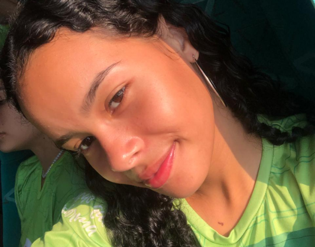

Olá, meu nome é Anne Gabriele Salvador Bassi e atualmente estou no segundo ano do curso integrado ao ensino médio em Informática no Instituto Federal de Rondônia (IFRO), campus Vilhena. Desde que entrei nesse curso, tenho me dedicado intensamente ao aprendizado de diversas áreas da tecnologia, como programação, desenvolvimento web, e banco de dados.
Meu objetivo é crescer profissionalmente no mundo da tecnologia, sempre buscando me aperfeiçoar e aprender coisas novas. Durante meu tempo no IFRO, já participei de vários projetos, onde pude aplicar o conhecimento que adquiri em sala de aula, como o desenvolvimento de sites, criação de cartazes digitais e até mesmo a organização de eventos voltados para a conscientização social, como a Consciência Negra.
Estudar no IFRO tem sido uma experiência enriquecedora, tanto no aspecto acadêmico quanto no pessoal. A cada dia, sou desafiada a explorar novos conceitos e a me tornar uma profissional mais capacitada, com a meta de fazer a diferença no mercado de trabalho. Além disso, adoro a oportunidade de participar de atividades extracurriculares, como eventos culturais e projetos interdisciplinares, que me ajudam a crescer de forma mais ampla.
Tenho um grande interesse por tudo o que envolve tecnologia, e minha jornada no IFRO tem sido um reflexo do meu compromisso em me tornar uma profissional qualificada. Estou sempre pronta para novos desafios e disposta a aprender com cada experiência.